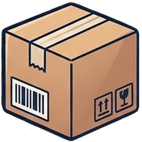

一只常驻菜单栏的
小信鸽。
A serif menu bar pigeon
for your Git repos.
在你 push 之前 — 替你看一眼。 Takes one careful look — before you push.
纯本地 · 不调 LLM · 不传代码 · 不收 telemetry Local by principle · No LLM · No data leaves your Mac


AI 写得越快，
没人替你检查的就越多。
The faster AI writes,
the less anyone checks.
Cursor、Claude Code、Copilot 一晚上能生成几十个 commit。你早已看不过来了 —— 而这些是直接被推到公网的代码。 Cursor, Claude Code, Copilot — they ship commits faster than you can read. And every one of them lands on the public internet.
.env 被悄悄推上去 .env quietly committed
一次手抖的 git add . —— 一周后从 GitGuardian 邮件里发现 OpenAI key 被人扫到了。
One careless git add . — a week later GitGuardian emails you about the leaked OpenAI key.
LLM API key 进了 git history API keys in git history
"反正之后会改" —— history 比记忆长。一旦 push，rotate key 是唯一的退路。 "I'll fix it later." History outlives memory. Once pushed, rotating the key is the only way back.
50 MB 模型混进 commit 50 MB blob in a commit
.DS_Store、build/、id_rsa、200MB 的 .safetensors —— 仓库膨胀的故事，永远从一个 commit 开始。 .DS_Store, build/, id_rsa, a 200 MB .safetensors — every bloated repo started with one commit.
像一封信寄出前，
过一遍邮戳。
Like a letter passing
through the post office.

在你点"推送"的瞬间，Pilo 做四件事 The moment you hit push, Pilo does four things
- 扫敏感信息Scan for secrets
- 守误提交Guard against accidents
- 辨身份Sentinel for identity
- 分类 push 错误Classify push errors
不只是安全检查 —
它陪你走完每一个仓库。
More than a scanner —
a companion for every repo.
Pilo 把 git 这件冷冰冰的事重新写成了一段日常仪式。 Pilo turns the cold ritual of git into something almost warm.

Push 前安全检查 Push-time safety check
25 条 secret 规则 + 6 类误提交守护，全部跑在本地。误报标记可"仅此文件"或"仅此规则"两档持久化 —— 第二次 push 不再骚扰。 25 secret rules + 6 commit-guard categories, all running locally. False-positive marks persist at two scopes ("this file only" or "this rule") — second push, quiet.

每日邮局信件 Daily Letter
每天 18:00 一封信。今日寄出 / 草稿中 / 各仓库的进度 —— 用宋体写在 cream 信纸上，配旋转邮戳水印。 Every day at 18:00, a letter arrives. What you shipped, what's still drafting, every repo's mood — written in serif on cream paper with a rotated postal-dial watermark.
邮票本 · 桌面浮动 Dock Stamp Panel · floating dock
屏幕边缘的浮动小邮票 — 点击展开扇形 prompt 库。AppKit 级别的拖拽，5pt 阈值区分点击/拖动。"钉到首位 ✦" 让常用 prompt 永远第一个。 A floating stamp at your screen edge — tap to fan out your prompt collection. AppKit-level drag, 5pt threshold separates tap from drag. Pin ✦ keeps favourites first.

仓库陪伴 · 草稿 · 项目档案 Companion · drafts · project docs
智能 4 档 subtitle 跟你打招呼："桌上 N 件 / 昨天来过 / 已 30 天没见"。Readme / AI-instructions / CHANGELOG 自动索引 + cream paper sheet 预览。 A 4-tier subtitle greets you — "N drafts on the desk" · "saw you yesterday" · "30 days, welcome back". Readme / AI-instructions / CHANGELOG indexed automatically, previewed on cream paper.
"美 = 留得下来。
大多数开发者工具像电子表格 —— 密集、方正、中性。
Pilo 像一封信。" "Beauty is what keeps a tool around.
Most developer tools are built like spreadsheets — dense, square, neutral.
Pilo is built like a letter."
宋体衬线 · 暖纸品色 · 金色装饰线 · 信纸 cream 卡 · 旋转邮戳 · 真鸽子。灵感来自中式邮局递信的那一点点小仪式 —— 在 AI 几秒就能写完一个 PR 的时代，慢一拍的设计反而能让人留下来。 Songti SC serif, warm paper tones, gold ornament lines, cream letter cards, rotated postage stamps, a real pigeon. The small ceremony of posting a letter — translated into a developer tool. In an age where AI ships PRs in seconds, the design that slows you down by a half-beat is what makes you stay.
—— 写在 README.md 第 33 行 — from README.md, line 33代码不会离开你的电脑。 Your code never leaves your Mac.
不调 LLMNo LLM calls
所有检测都是确定性规则 + 熵阈值。没有 prompt，没有云端模型。 All detection is deterministic rules + entropy thresholds. No prompts, no cloud models.
不传代码No code uploaded
diff、commit、文件名 —— 都只在你本机被读。仓库元数据只写到 ~/Library/Application Support/Pilo/。
Diffs, commits, filenames — read only on your machine. Repo metadata lives in ~/Library/Application Support/Pilo/.
不收 telemetryNo telemetry
没有埋点。没有 analytics SDK。没有"匿名错误上报"。开源代码里你能搜得到证据。 No tracking. No analytics SDK. No "anonymous error reports". The open source repo is your receipt.
唯一的网络请求：调一次 GitHub 公开 API 判断仓库公开/私有（无需 token、24 小时缓存）。源代码可查 —— GitHubVisibility.swift。
The only network call: GitHub's unauthenticated public API to check repo visibility (no token, 24h cache). All of it is in GitHubVisibility.swift.
今天 —— 从源码编译。 Today — build from source.
签名 DMG 还在 wishlist 上。如果你想加速它的到来 —— ⭐ 一下仓库。 A signed DMG is on the wishlist. ⭐ the repo if you'd like it sooner.
# 第一次安装 xcodegeninstall xcodegen once $ brew install xcodegen # 拿代码 + 生成 Xcode 项目clone + generate Xcode project $ git clone https://github.com/emma-yu/Pilo.git $ cd Pilo $ xcodegen generate $ open Pilo.xcodeproj